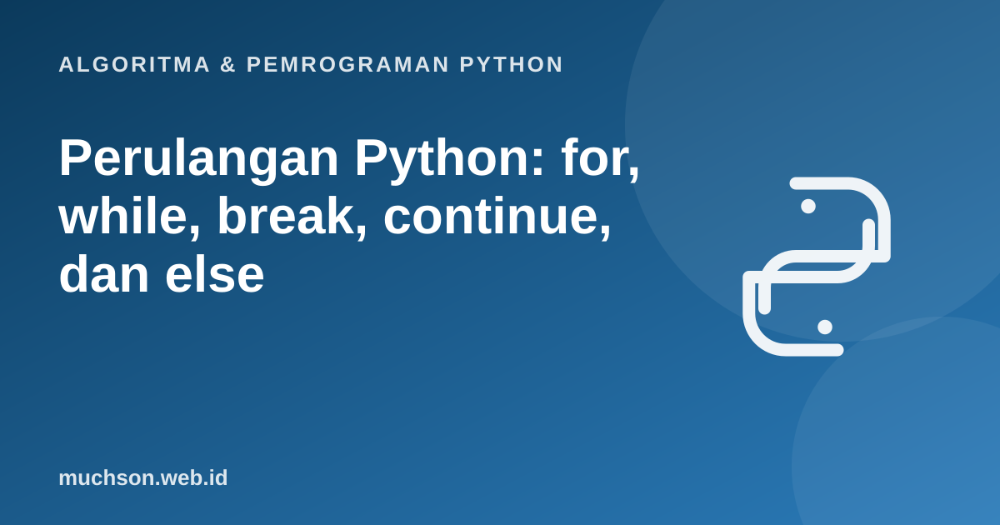

Beranda › Artikel › Algoritma & Pemrograman Python
Algoritma & Pemrograman PythonPerulangan Python: for, while, break, continue, dan else
Perulangan adalah alasan komputer berguna: mengerjakan ribuan langkah tanpa lelah. Kuncinya memilih jenis perulangan yang tepat, memastikan perulangan pasti berhenti, dan memahami apa yang berubah pada setiap putaran. Materi ini membangun kemampuan itu lewat contoh yang bisa Anda telusuri sendiri.
Sebaiknya sudah paham: percabangan, operator

Setelah membaca dan mencoba materi ini, Anda mampu:
- memilih antara for dan while sesuai situasi
- memakai range dengan awal, akhir, dan langkah
- menulis pola akumulator, penghitung, dan pencari maksimum
- memakai break, continue, dan else pada perulangan
- memastikan sebuah while pasti berhenti
for: mengulang untuk setiap elemen
Pakai for bila jumlah putaran diketahui atau Anda ingin memproses setiap elemen sebuah urutan.
for huruf in "ABC":
print(huruf)
for buah in ["apel", "jeruk"]:
print(buah.upper())
for i in range(3): # 0, 1, 2
print("putaran", i)A
B
C
APEL
JERUK
putaran 0
putaran 1
putaran 2
range(awal, akhir, langkah)
print(list(range(5))) # 0..4 (akhir tidak termasuk)
print(list(range(2, 8))) # 2..7
print(list(range(0, 20, 5))) # 0, 5, 10, 15
print(list(range(5, 0, -1))) # menurun: 5..1
print(sum(range(1, 101))) # 5050[0, 1, 2, 3, 4]
[2, 3, 4, 5, 6, 7]
[0, 5, 10, 15]
[5, 4, 3, 2, 1]
5050
while: mengulang selama syarat benar
Pakai while bila jumlah putaran tidak diketahui di awal. Syarat diperiksa sebelum setiap putaran.
Setiap while harus memiliki sesuatu di badannya yang mengubah syarat menuju salah. Lupa baris n -= 1 pada contoh di atas menghasilkan perulangan tak berhingga. Hentikan program yang menggantung dengan Ctrl+C.
Pola-pola perulangan yang wajib dikuasai
data = [12, 7, 25, 3, 18]
total = 0 # akumulator (penjumlahan)
for x in data:
total += x
genap = 0 # penghitung
for x in data:
if x % 2 == 0:
genap += 1
terbesar = data[0] # pencari maksimum
for x in data[1:]:
if x > terbesar:
terbesar = x
print(total, genap, terbesar, total / len(data))65 2 25 13.0
enumerate dan zip
nama = ["Ani", "Budi", "Citra"]
nilai = [88, 72, 95]
for i, n in enumerate(nama, start=1): # nomor urut sekaligus elemen
print(i, n)
for n, v in zip(nama, nilai): # dua urutan paralel
print(f"{n}: {v}")1 Ani
2 Budi
3 Citra
Ani: 88
Budi: 72
Citra: 95
break, continue, dan else
| Pernyataan | Efek |
|---|---|
| break | Menghentikan perulangan seketika |
| continue | Melompat ke putaran berikutnya |
| else (pada perulangan) | Dijalankan bila perulangan selesai tanpa break |
def prima(n):
if n < 2:
return False
for d in range(2, int(n ** 0.5) + 1):
if n % d == 0:
return False # ketemu pembagi: bukan prima, berhenti
return True
hasil = []
for n in range(2, 30):
if prima(n):
hasil.append(n)
print(hasil)
for n in [4, 6, 9, 7]:
for d in range(2, n):
if n % d == 0:
print(n, "bukan prima, habis dibagi", d)
break
else: # tidak ada break: tidak ada pembagi
print(n, "prima")[2, 3, 5, 7, 11, 13, 17, 19, 23, 29]
4 bukan prima, habis dibagi 2
6 bukan prima, habis dibagi 2
9 bukan prima, habis dibagi 3
7 prima
Contoh klasik: dugaan Collatz
Mulai dari bilangan n. Bila genap, bagi 2. Bila ganjil, kalikan 3 lalu tambah 1. Ulangi sampai n = 1. Tidak ada yang pernah menemukan angka yang gagal berhenti, tetapi belum ada pula yang berhasil membuktikannya: contoh sempurna di mana kita tidak bisa memastikan sebuah while berhenti.
n, langkah = 6, 0
while n != 1:
print(n, end=" -> ")
n = n // 2 if n % 2 == 0 else 3 * n + 1
langkah += 1
print(1)
print("langkah:", langkah)6 -> 3 -> 10 -> 5 -> 16 -> 8 -> 4 -> 2 -> 1
langkah: 8
1. Tulis program yang mencetak semua bilangan kelipatan 7 dari 1 sampai 100.
for i in range(7, 101, 7): print(i) atau for i in range(1, 101): if i % 7 == 0: print(i).2. Hitung berapa kali sebuah bilangan n dapat dibagi 2 sampai hasilnya ganjil (misalnya 40 → 3 kali).
c = 0
while n % 2 == 0:
n //= 2
c += 1. Untuk n = 40: 40 → 20 → 10 → 5, jadi 3 kali.3. Mengapa while True: sering dipakai bersama break?
4. Apa yang tercetak: for i in range(3): print(i) lalu print(i) di luar perulangan?
- for untuk elemen atau jumlah putaran yang diketahui, while untuk berulang sampai suatu kejadian.
- range(awal, akhir, langkah) tidak menyertakan nilai akhir.
- Pola dasar: akumulator, penghitung, dan pencari maksimum.
- break menghentikan, continue melewati, else dijalankan bila tidak ada break.
- Pastikan setiap while mengubah kondisinya menuju salah.
Tanya jawab
Apakah Python punya do-while?
while True: yang berisi break di akhir blok.Bolehkah mengubah list saat sedang di-for?
Mana yang lebih cepat, for atau while?
Referensi
- Dokumentasi Python: for Statements dan range()
- Dokumentasi Python: break, continue, dan else pada loop
- MIT OpenCourseWare 6.0001: Introduction to Computer Science and Programming in Python
- Allen B. Downey, Think Python (edisi ke-3), buku teks terbuka